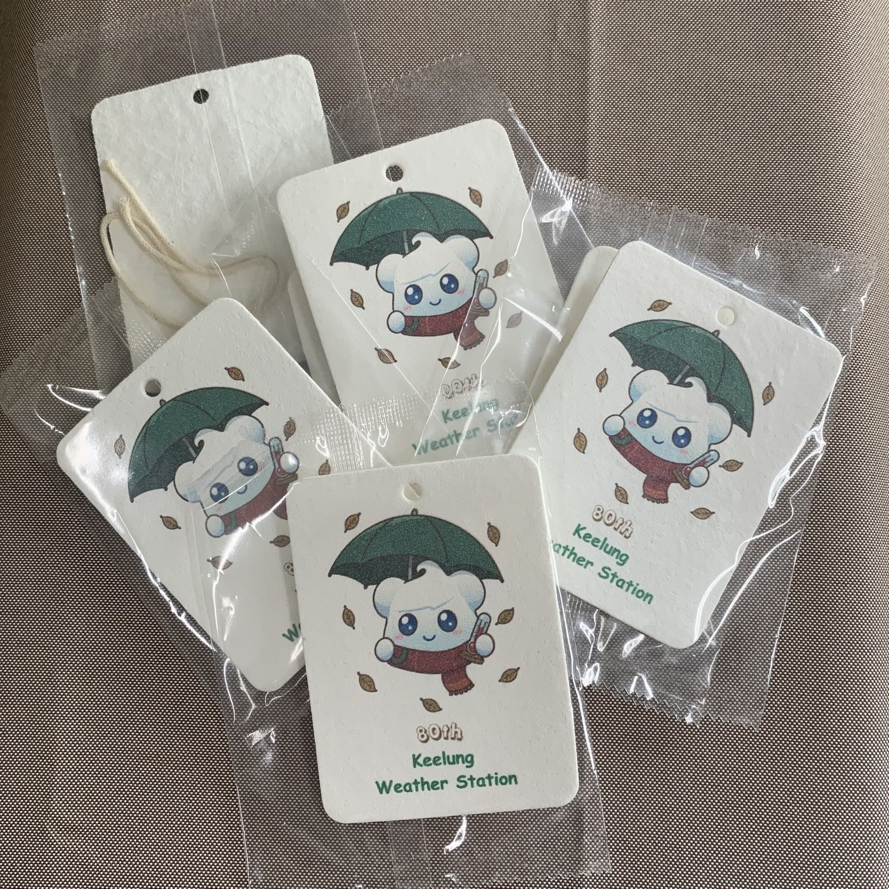

遊戲規則及活動辦法
⏰ 重要時間
開放預測：10月07日 08:00 至 11月08日 24:00
開獎時間：11月11日 12:30 ~ 13:30
▶️ 直播預告
開獎方式：基隆氣象站臉書直播抽出得獎人，並立即撥打得獎人手機，撥通時請說出通關密語：祝基隆氣象站生日快樂🥰
🎯 預測投票
歷史統計紀錄參考
📅 11/11 歷史天氣統計
(1946 ~ 2025 年共 80 次紀錄)
▪️未降雨：33 次
▪️降雨：47 次
🌪️ 歷史水龍捲紀錄
▪️2016/11/08 (八斗子潮境公園)
▪️2018/07/10 (外木山)
▪️2026/09/08 (漏斗雲未觸海)
❄️ 歷史下雪紀錄
▪️2016/01/24 (霸王級寒流)
🏆 豐富獎項介紹
凡參加者皆可得 1 件隨機 80 周年紀念小物
(請至基隆氣象站或中央氣象署本部領取)
預測對且最早預測之 1 名！可直接獲得 1 份 80 周年紀念禮品
預測對之參加者，可獲得 1 次「80 周年紀念禮品」抽獎機會
凡參加者可獲得 1 次「整組 80 周年紀念小物」抽獎機會
💡 投票規則及領獎聯絡電話： 可以重複投票，將以您 手機號碼最後 1 次送出的投票 為準！ 凡參加投票的朋友，1 支手機領取 1 件紀念小物，請於 今年底 115/12/31 前 ，至 基隆氣象站 (02-2422-4240) 或 中央氣象署大氣觀測組 (02-2349-1025) 親自領取唷！
📱 直播抽獎規則： 將於基隆氣象站 80 周年站慶活動現場，抽出幸運得獎人（您說的對獎、參加加碼獎）， 現場會直接撥打電話給得獎人，請務必留意手機鈴聲！若撥打 響鈴 5 聲未接聽視為棄權，並再抽出 1 組得獎人號碼，若抽出 2 組得獎人號碼撥打皆未接聽，將直接開放現場 Call In 遞補！
每週紀念獎項揭曉專區

紀念小物 A (造型海綿)
紀念小物 B (未解鎖)
紀念小物 C (未解鎖)
紀念禮品 (未解鎖)
📊 目前活動參與狀況
已有來自各界的好手完成預測投票！